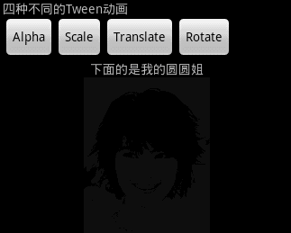
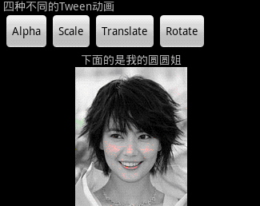

Android Tween动画（一）
Android平台提供了两类动画，分别是Tween动画，和Frame动画。Tween通过场景里的对象不断的进行图片的变换，比如平移、渐变、缩放、旋转等来产生动画效果；Frame动画叫做顺序播放实现做好的图像和电影类似。另外加上gif动画，因为如果直接使用Bitmap或其他方法直接调用gif图片资源的话，显示的是静态的，如果要做成动态的，就需要一些其他的方法来实现。
首先来谈谈Tween动画，它有四种
①Alpha：渐变透明度动画
②Scale：渐变尺寸伸缩动画
③Translate：画面转换位置移动动画
④Rotate：画面转移旋转动画
这些动画的执行步骤差不多：先定义Animation动画对象，然后设置动画的一些属性，最后通过startAnimation()方法开始动画。
setDuration(long durationMillis);
功能：设置动画显示的时间
参数：durationMillis为动画显示时间的长短，以毫秒为单位
startAnimation(Animation animation)
功能：animation为要播放的动画
参数：animation为要播放的动画
第一种：AlphaAnimation(float fromAlpha, float toAlpha)
功能：创建一个透明度渐变的动画
参数说明：fromAlpha是动画起始时透明度；toAlpha是动画结束时透明度
注：0.0表示完全透明，1.0表示完全不透明
实现它有两种方式。
1、直接在程序中创建动画
//创建Alpha动画Animation alpha = new AlphaAnimation(0.1f, 1.0f);
//设置动画时间为5秒
alpha.setDuration(5000);
//开始播放
img.startAnimation(alpha);
2、通过XML来创建动画
alpha_anim.xml。在res/anim目录下
<?xml version="1.0" encoding="utf-8"?><set xmlns:android="http://schemas.android.com/apk/res/android" >
<alpha
android:duration="5000
android:fromAlpha="0.1
android:toAlpha="1.0" >
</alpha>
</set>
程序中直接调用
Animation scale = AnimationUtils.loadAnimation(TweenActivity.this, R.anim.scale_anim);//开始动画
img.startAnimation(scale);

